Graphing in Excel: A Tutorial on Scatter Plots
- Importing Data
1.1 Setting up
- Download this file
- Open Microsoft Excel
1.2 Inserting the data
- Click “Open”
- Click “This PC”
- Up at the top, there is an up arrow with a folder name beside it, probably “Documents”. Click that.
- Set the file type to “all files and find the file (WeatherData.csv) on your computer.
Φ Notice: File is most likely in “Downloads” folder - Click on the file
- Click “Open”
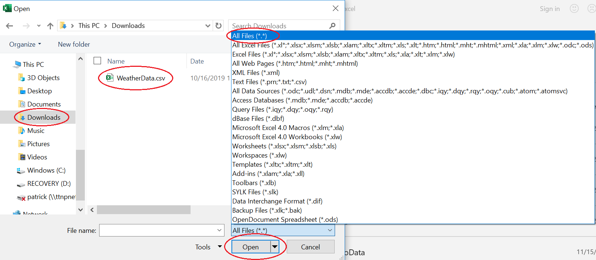
1.3 Removing unnecessary data
The only columns we need are the TMAX and TMIN columns. Lets select the rest and delete it
- Select all columns to the left of TMAX
- Right click the column headers (A, B, C, etc.)
Φ Notice: The headers are not the text headers (STATION, NAME,, TMAX, TMIN, etc.) - Click Delete
Ξ Warning: Be careful when deleting data. Just because you aren’t going to graph it does not mean you won’t need it. For our purposes, we do not need the other data.
- The final data should look like this
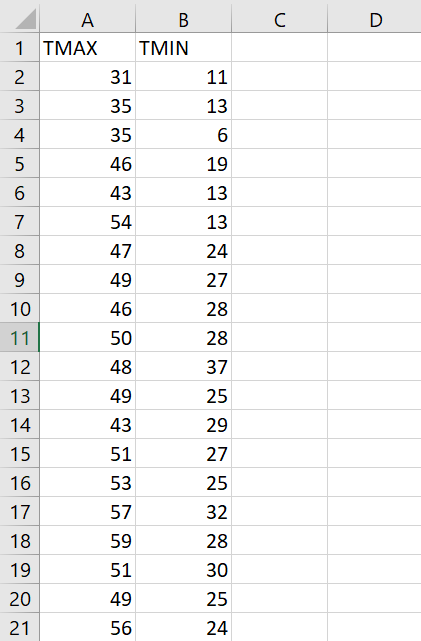
2. Creating a Graph
2.1 Selecting data
- Navigate to the tab at the top bar and click on the “insert” tab.
2.2 Choosing type of graph
- Next select the scatter plot graph as shown below
- A blank graph should show up. Right click on the graph and press “select data” as seen below
- Then click “add series”
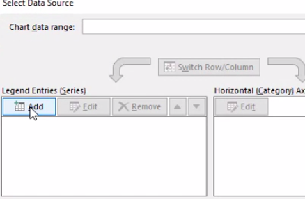
- Then click on the ‘Series X Values’ box
- Starting from the top of the TMIN column click and drag down to the 100th data entry in the column. The picture below shows 12 points selected, you should still select 100
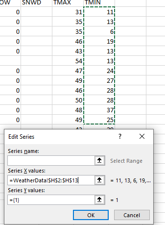
- Erase the “={1}” from the ‘Series Y Values’ box and then drag down 100 data points[a][b] as you did in the previous step
- Lastly add the name of the series that you would like it to have in the ‘Series name’ box
2.3 Moving the graph
- Click on a blank space on the graph and drag it to where you want it to be.
- At the end the graph should look the same as below.
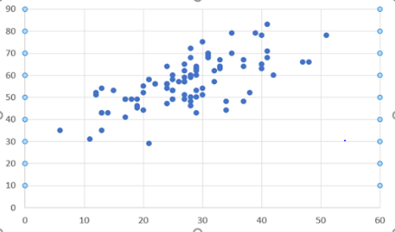
- Editing a Graph
3.1 Adding and Editing Titles
- To add titles to the graph, first click on the graph itself.
Φ Notice: the graph should be highlighted with a black border
and green plus sign will appear on the upper right as seen below
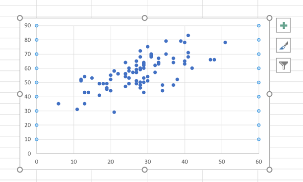
- Left Click on the green plus sign and the following list will appear.
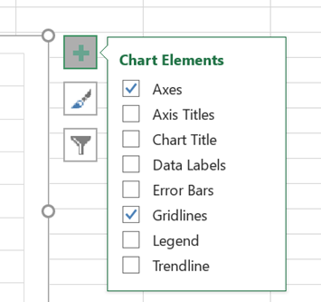
- Select the checkboxes for Axis Titles and Chart title and titles will be added to the graph as shown below.
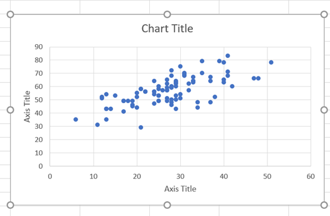
- To edit graph titles, left click on the title desired to be changed and a text box editor should appear
- label graph with respect to data chosen.
3.2 Adding minor gridlines to graph
- To add minor gridlines to a graph first right click on the x-axis and the pop up menu below will appear.
- Left click add minor gridlines and the lines will be added to the graph.
- Follow the same process above to add minor gridlines to the y-axis.
3.3 Formatting axes
- To format the newly added grid lines, Right click the x-axis and select the Format axis button as shown below.
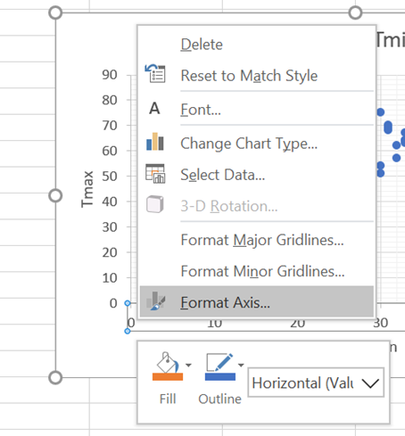
- After this is selected a Format Axis menu will appear on the right hand side of the screen as shown below.
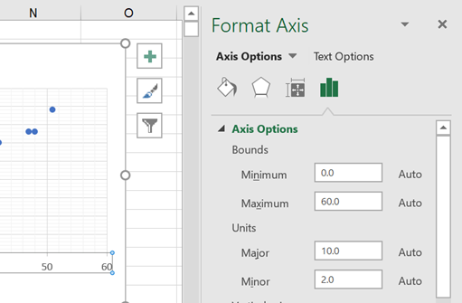
- Change the minimum bound to 10 and the maximum bound to 55. Then change the major units to 5 and the minor to 1.
- After editing the example graph should look like the figure below.
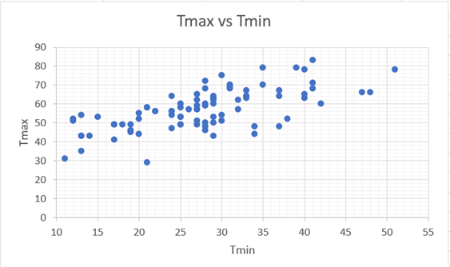
4. Processing Data
4.1 Adding a trendline
- Click on the green plus button on the right side of the graph
- Check the box next to Trendline
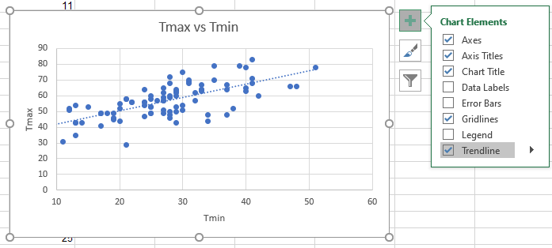
4.2 Adding an equation
- Right click on the trendline where the least amount of dots are
- Select Format Trendline
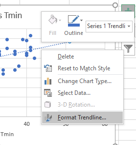
- Under the Format Trendline menu, check the Display Equation on Chart Box
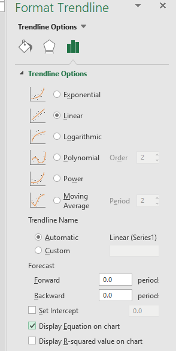
- The equation will then appear on the graph as seen below:
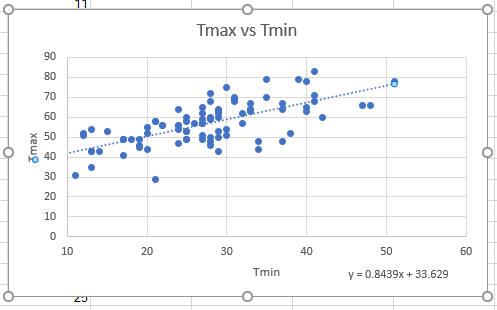
4.3 Creating a legend
- Click on the green plus button on the right side of the graph
- Check the box next to Legend
- The legend will then appear on the right side of the graph as seen below:
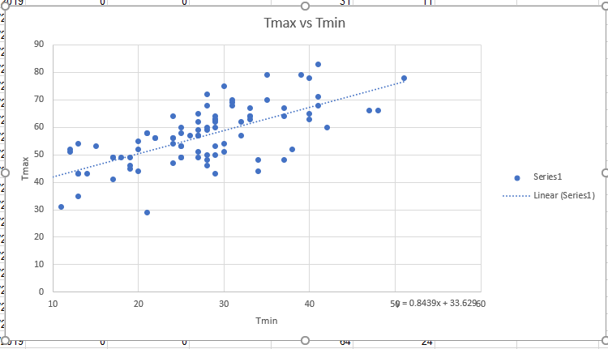
5. Analyzing Data
5.1 Does the trendline adequately describe the data (R2 value)
To check how accurately the equation and trendline you found correspond to the actual data you found, determining the R2 value is helpful. The R2 value is the proportion of variance between the dependent and independent variables, or more plainly, how accurately does the equation reflect the data.
- To determine the R2 value, double click on the trendline in your plot.
Φ Notice: a menu should appear on the right
- Select the tab that looks like a bar graph
- Under the ‘Trendline Options’ list, at the bottom below where you checked to display the equation is another box to display an ‘R2 value on chart’ select this.
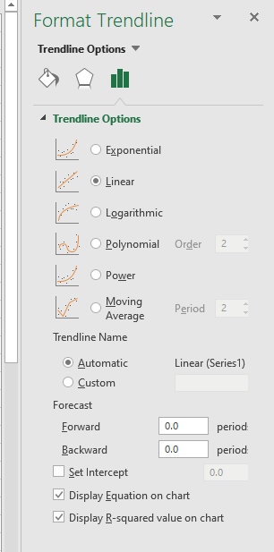
- If you now look on your chart next to where your equation is displayed you will now see something that says R2 = 0.477, or something similar.
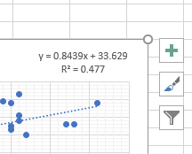
5.2 What does the equation mean in relation to the data in real life. i.e (y increases in respect to x or etc.)
- When you are looking at your R2 value the closer your equation matches the data the closer R2 is to 1.
Φ Notice: Some sets of data are better portrayed using other trendline options such as polynomials, or exponential curves. However regardless of what trendline you use sometime your R2 value wont substantially close with 1, in this case do the best you can and make do with the equation and trendline you generated, as sometimes more data is required in order to improve an R2 value
- If we look at the equation there are several things we can immediately attempt to infer from it, namely the maximum temperature for a day when the minimum temperature is 0 °F would be 33.6290 °F.
Φ Notice: This is because the y-intercept of the equation is 33.629, As our equation allows us to plug in any value of ‘x’ as a minimum temperature and y will be the associated maximum temperature.
- The second is we can immediately assume that if the minimum temperature of the day increases, the maximum does as well.
Φ Notice: This is because our overall slope of the trendline and equation is positive, as our ‘m’ value in this case was 0.8439, which is greater than 0.